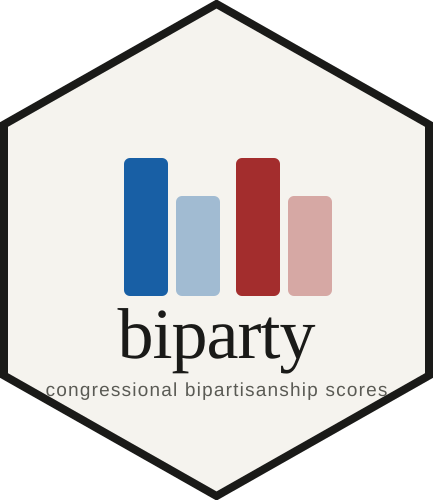

Member-level attract and offer scores for every U.S. House and Senate member, 98th–118th Congresses (1983–2024). Two complementary measures — attract (out-party cosponsor draw) and offer (cross-party support given) — computed overall and within 34 CRS policy areas. Introduced in Dobson & Lollis (2026).
Bipartisanship over time
Mean precision-weighted scores per Congress × chamber × party. Source: aggregate.cbs.
Member profile
Search any member of Congress to see their full bipartisanship profile across all terms and issue areas.
Install & use
remotes::install_github("congressional-bipartisanship-scores/biparty")
library(biparty)
rank_members(117, "senate", score_type = "attract", n = 10)
plot_member_profile("G000386", congress = 117, chamber = "senate")
Citation